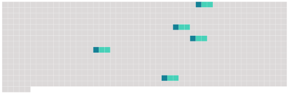

Longueur nb maillons : 5 mentions |
 |
L'agent des douanes dont l'habilitation a été suspendue recouvre de plein droit, à l'expiration de la suspension, la faculté d'exercer des missions de police judiciaire sur réquisition de [l'autorité judiciaire] [6 phrases]
Il fait des propositions à [l'autorité judiciaire] sur les types de missions de police judiciaire qui pourraient être confiées aux agents des douanes. [1 phrases]
Article R15-33-13 [1 phrases]
Ce dossier comprend notamment : [4 phrases]
Elles comportent une appréciation générale circonstanciée, ainsi qu'une note chiffrée de 0 à 10 et une appréciation sur chacun des éléments suivants lorsqu'ils ont été observés : |
 |
La ressource peut être téléchargée sur la page Ortolang
Si vous avez des questions ou vous voyez des erreurs, merci d'envoyer un mail à silvia.federzoni89@gmail.com
Site développé par S. Federzoni (contact)